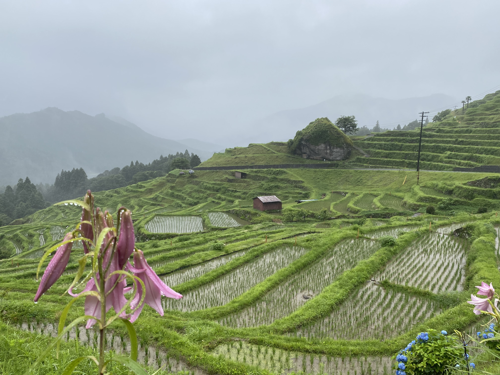
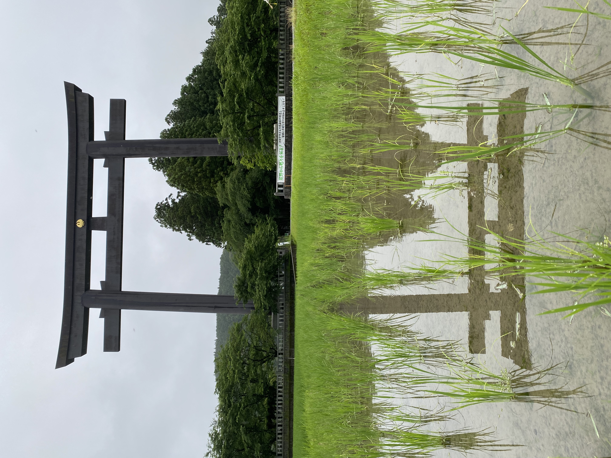
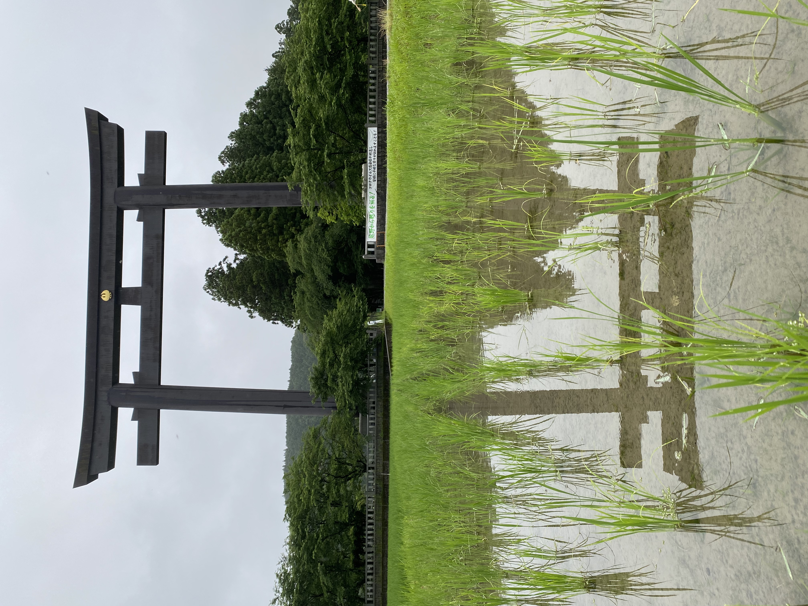
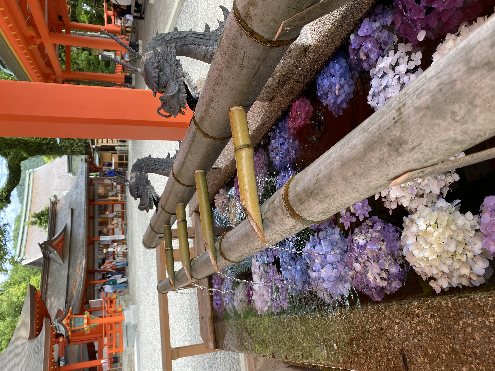
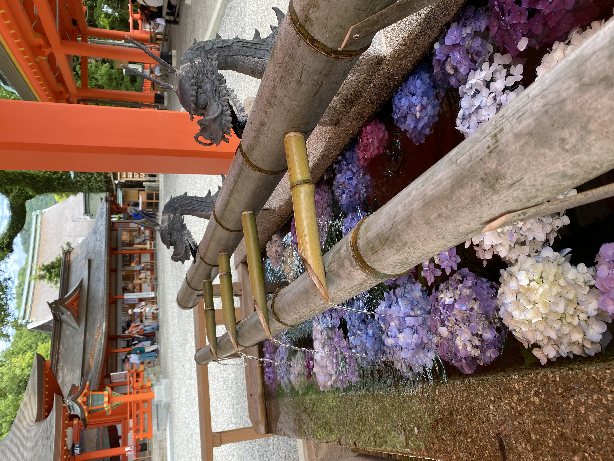
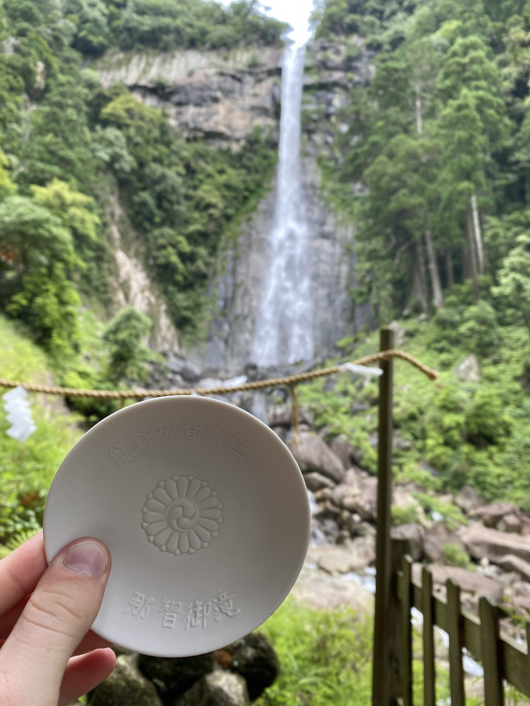
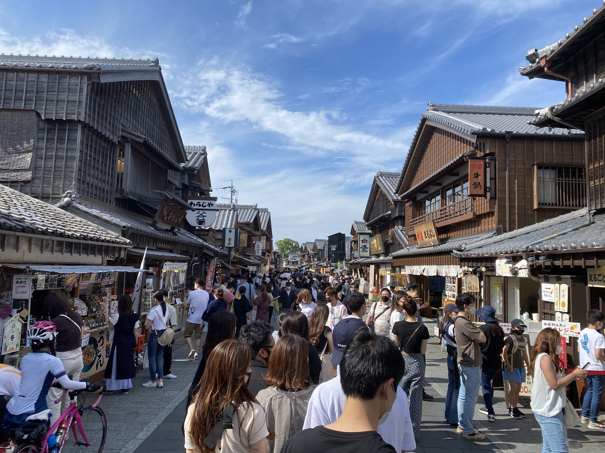
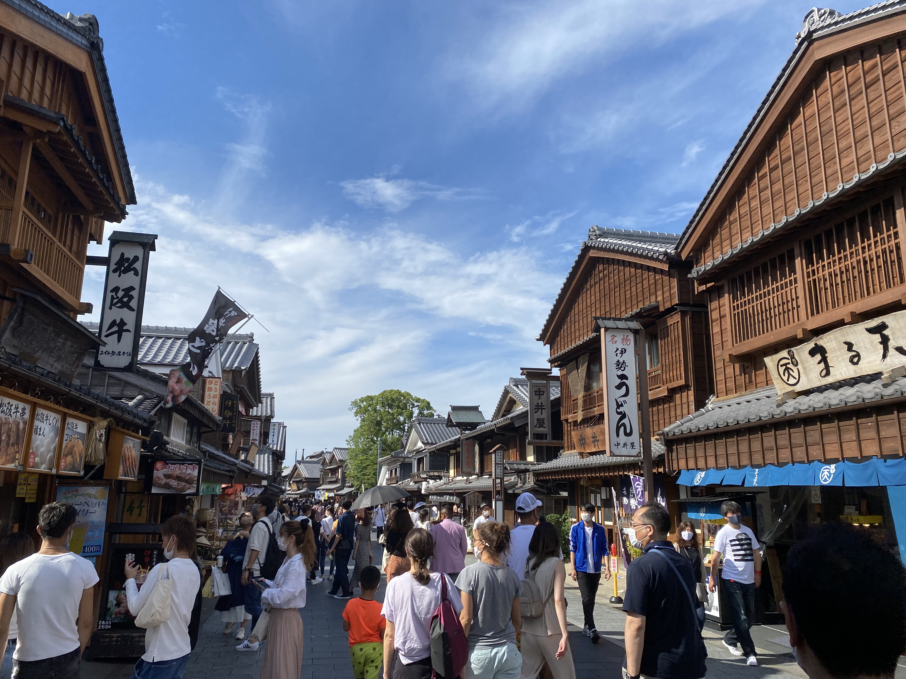
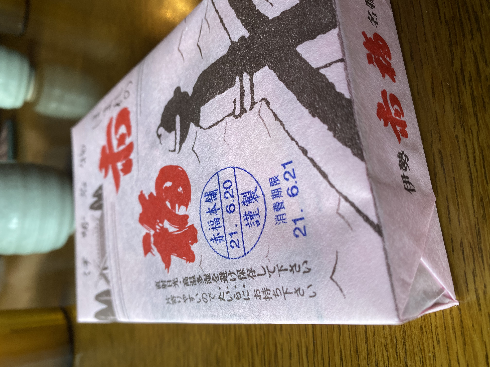

Kumano - Ise
熊野 - 伊勢
Les "mille rizières" de Maruyama dans la brume mystique de la saison des pluies




 

Le beau temps finit par revenir ! L'eau des rivières est chauffée par les sources d'eau chaude souterraines et permet de cuire les oeufs et les légumes.


Le Kumano Kodo, chemin de pèlerinage millénaire, jalonné de sanctuaires et d'une belle cascade dont on peut boire l'eau pour obtenir l'éternelle jeunesse.
 




Ise, petite ville où se trouve le sanctuaire le plus important du pays. On ne peut pas le voir car seul l'empereur peut y pénétrer, mais on peut se balader dans les jolies rues alentour.


